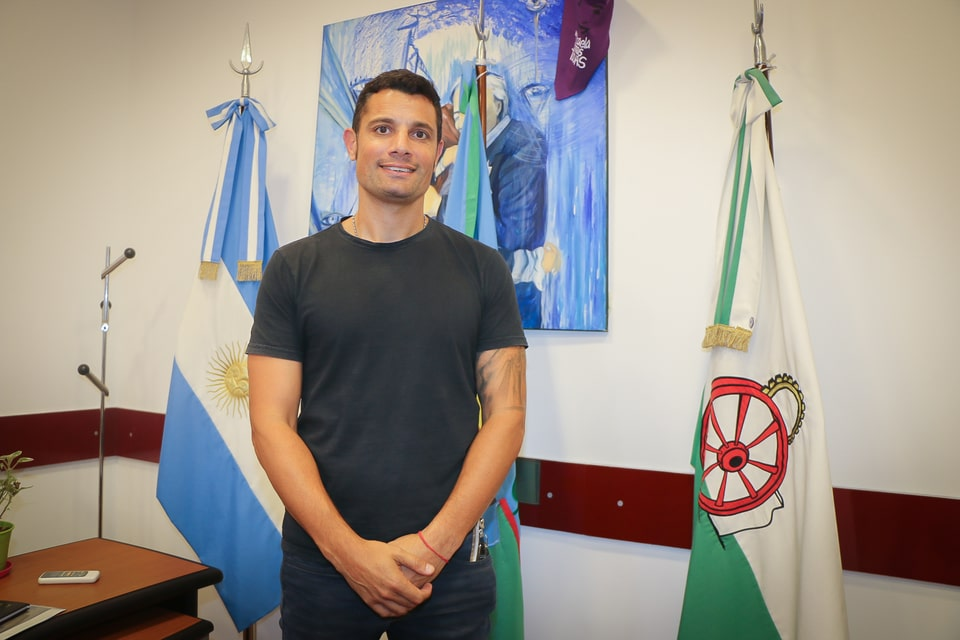

Mauro S. García
- Nacimiento: 30 de noviembre de 1975
- Lugar de residencia: General Rodríguez
- Ocupación actual: Intendente
- Partido: "Frente de Todos"
- Votos: 54.38%
- Desde: 2019 - actualidad
La familia de Mauro García es de cinco: él, su mujer y sus tres hijos (Juan, de su primer matrimonio; Emilia y Elena de su pareja actual).
Siempre hizo deporte, comenzó con atletismo, luego rugby y mientras estudiaba para Profesor de Educación Física, no solo realizó varios deportes afín, sino que trabajaba en la fábrica de helados "Massera" de Luján, con horarios rotativos. Al terminar su carrera a mediados de 2000/2001, quiebra la empresa por la crisis de la época, así que se dedicó desde el inicio 100% a la docencia.
Después comenzó sus estudios universitarios. En ese año, siendo que ya ejercía como docente, ingresó a la gestión pública, en la Casa del Niño "Libertad Lamarque", ubicada en nuestra localidad. Allí lo nombran director, pero más desde el rol profesional, organizando las actividades, conectaba con la Universidad Nacional de Luján, la UBA y trabajaba en leyes relacionadas con la Niñez y Adolescencia, en la ley 13298, que fue la ley en la Provincia y después en la 26061.
Participó en varias actividades y aproximado el 2005, comenzó la actividad como Subsecretario de Desarrollo Humano, en la Secretaria de Desarrollo Social, luego ejerció como Secretario de Salud y Acción Social, en el cual estuvo cinco años, implementado Políticas Públicas y ahí desarrolló varios programas como el Plan Trabajar (hoy día Argentina Trabaja). Programa de Educación Sexual y Procreación Responsable.
Participó por primera vez en una lista como Concejero Escolar en el 2009, asumiendo el mismo y cumpliendo varios roles en el departamento ejecutivo hasta el 2015. Ese año, se postuló para Intendente con una lista a nivel local, que obtuvo un porcentaje importante de votos que permitió el ingreso de dos concejales. En 2017, se postuló como Concejal, ganando e ingresando 6 concejales. En 2019 nuevamente se postula para Intendente y gana con el 50,32% de los votos. En el presente, fue reelecto con el 54,38%, junto con el partido "Frente de Todos".
- Empleado de heladería "Massera"
- Profesor de Educación Física
- Licenciado en Ciencias de la Educación
- Diplomado en Políticas Públicas
- Concejal
- Secretario de Salud y Acció Social
- Creó la Dirección de Niñez y Adolescencia, Dirección de APS y del Programa de Médicos Comunitarios de Llanura.